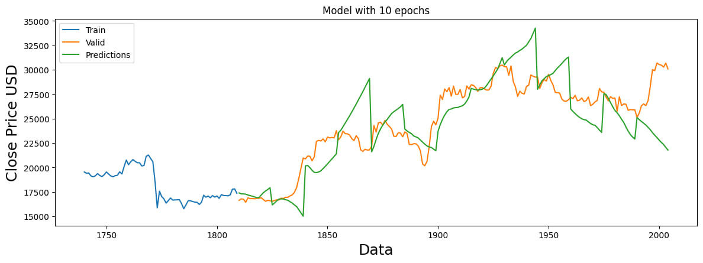
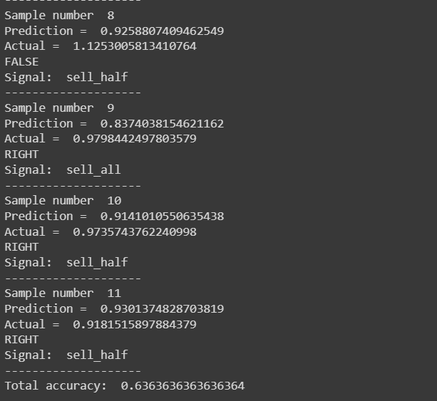
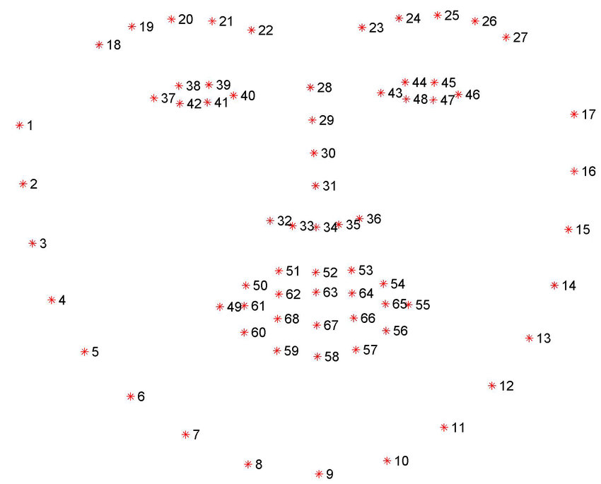
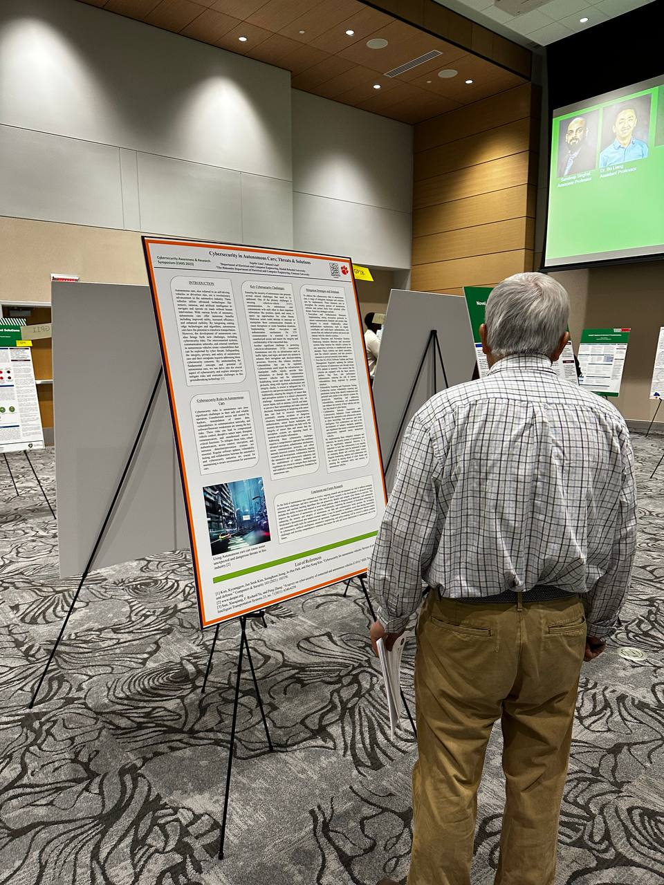

The main goal of this project is to investigate the existence of methods for predicting cryptocurrency prices and then simulating an automatic trading strategy based on that prediction; So that it can be used to make a profit in the digital currency markets. This attempt can not only be an important step in the field of automatic trading of cryptocurrencies, but also it can help financial analysts to better evaluate and increase their confidence about the future of this market. In this project, an attempt has been made to first design a model that has the ability to predict in a suitable period of time with acceptable accuracy. We used LSTM model for this purpose. In the second stage, an attempt has been made to design a strategy for automatic trading using the built model in such a way that these transactions will eventually lead to profit.
In the pictures below, there is the result of predictions of Bitcoin using LSTM model and financial Indicators. This is a consecutive prediction.
Here is the accuracy and obtained signals for the autotrading process:
A paper is going to be published soon about these works with the appreciated help of Dr. Alaeiyan.
This project has been done in a group of three members using agile methods. This is a website in which students can register and after they are validated by admins, they can sell or buy goods like their foods or books. Moreover a feature is implemented to let organizations put their job offers and hire the best suit among all the students. Similarly, students can upload their resume for their desired job offers. The following pictures are some screenshots from this website!
We carried out a project in which the trained model could detect faces in an input picture and recognize 68 facial points for every face in the image. Python libraries like numpy, pickle, tensorflow and keras were used to create a sequential CNN model and the training process was run on the google colab!
This is a simple multi-player game created using Java and JavaFX. Each player can change his block type by using some defined keys and there is a scoreboard to show the result. A preview can be seen below:
Here is a photo of my designed poster titled "Cybersecurity in Autonomous Cars; Threats & Solutions" in the lobby of North Dakota University. My presentation has been admitted among the top ones in this poster contest "Cybersecurity Awareness & Research Simposium"!
